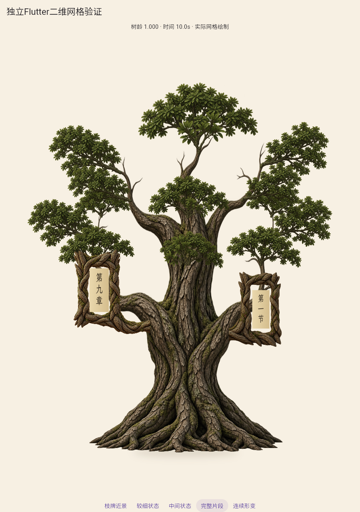
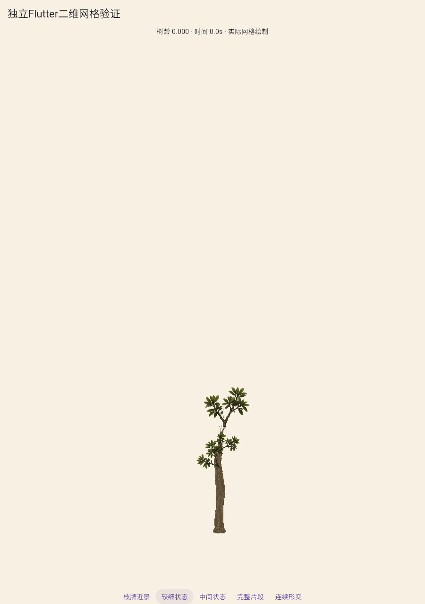
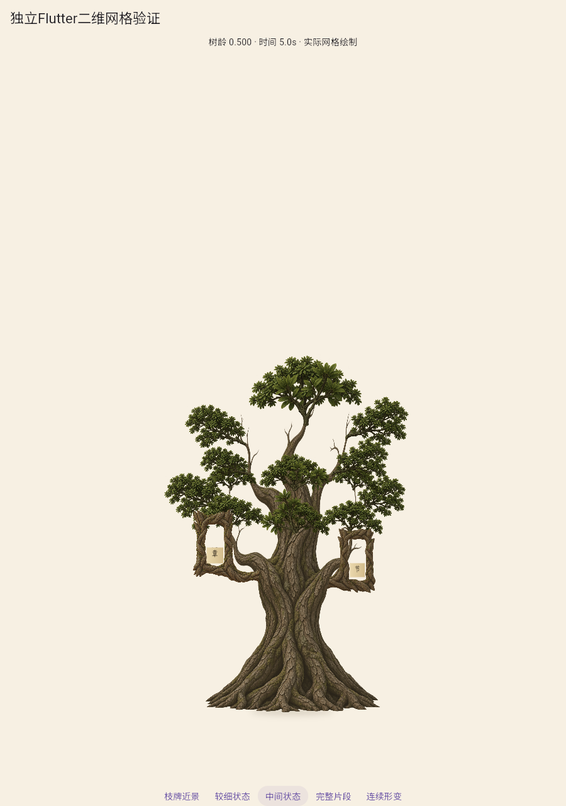
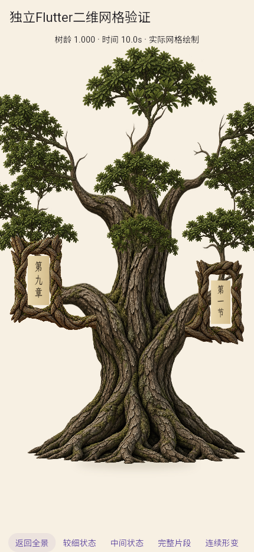
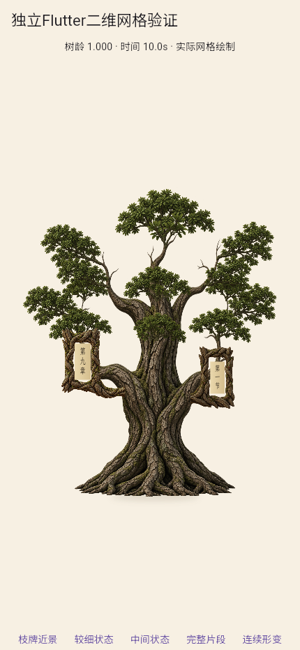

截面控制笼第二套完整候选：视觉拒绝
实体端口、遮挡和取景改善，但五指/烛台冠层及幼态老木质感仍未过。两轮上限已到，停止当前完整造型继续调参，A2未通过。
 统一宽冠、自然层级及材质体积的对照。
统一宽冠、自然层级及材质体积的对照。

五肩枝和分团叶冠仍突出，未达到参考整体。

弯曲和对比度改变，仍带压细老木的痕迹。

生长连续不等于生态自然。

两牌完整可读，基点与遮挡改善；不当作整套通过。

430×932独立预览，未测实体手机和正式页面。
固定相机连续成长
101个实际Flutter状态、10.1秒，显示时间和树龄；编码10fps不是运行帧率。
运行与哈希 · 资产与基点 · 区间朝向审计 · 实际UV端口验证 · 旧透明端口反例 · 默认局部回归 · 文件媒体复核 · 首轮对照 · 拒绝与下一项